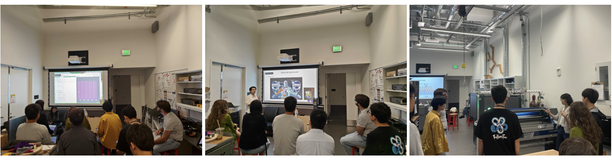
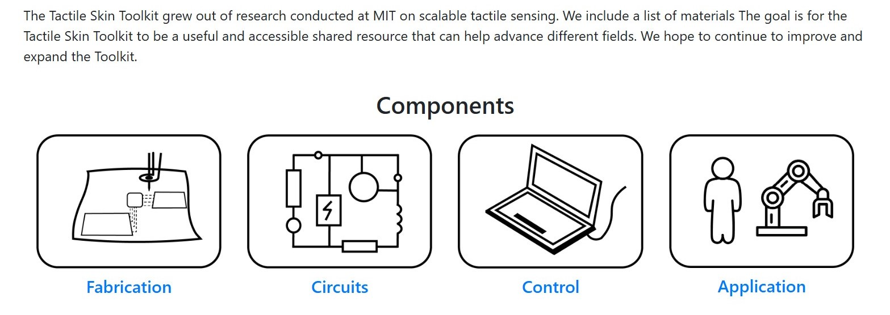
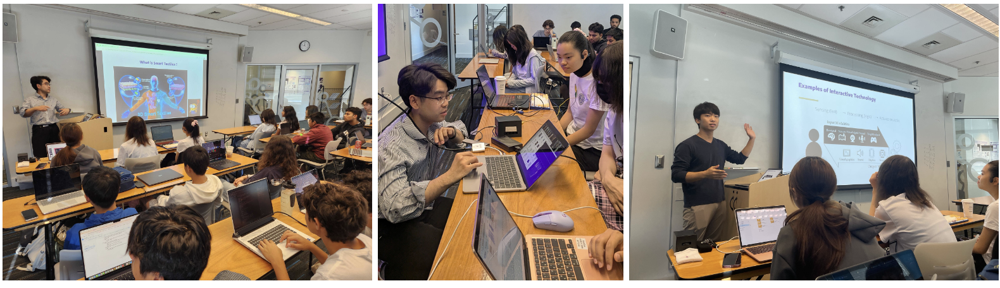
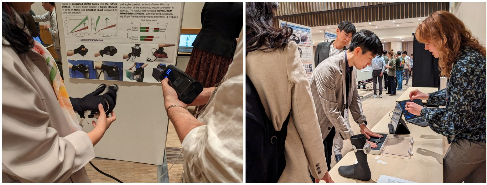
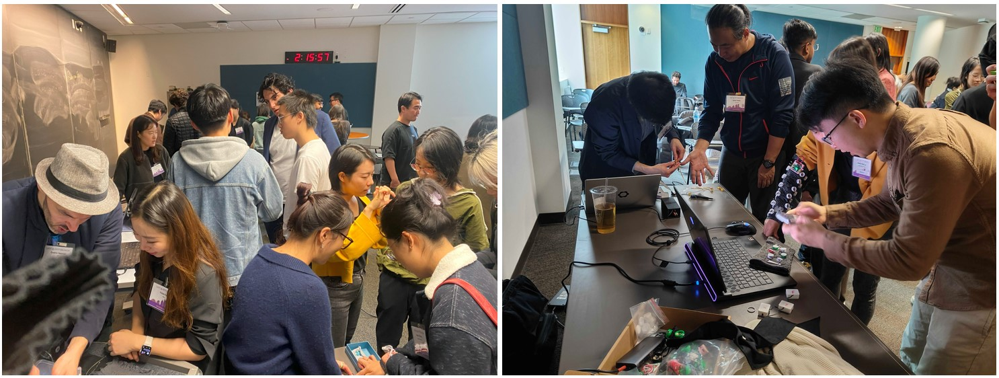
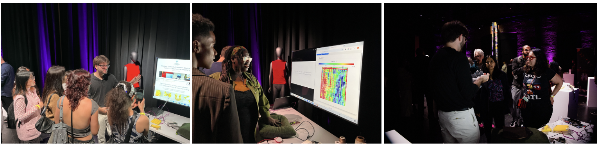
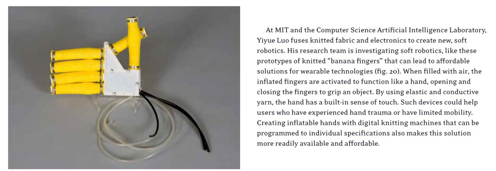
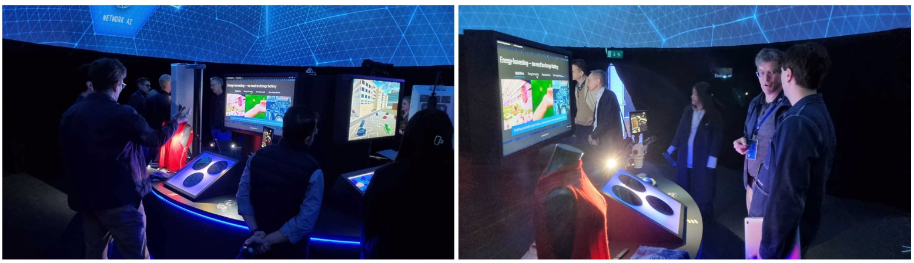

Making wearable intelligence accessible, understandable, and impactful for all.
We are dedicated to demystifying wearable technology through interactive demonstrations, hands-on workshops, and community-focused engagement. By empowering communities with knowledge and experience, we aim to inspire future engineers, researchers, and users to actively shape the future of wearable technology.
Resources for Hands-on Learning

Tactile Skin Toolkit
An open, hands-on toolkit for exploring tactile sensing and wearable fabrication.
Open the toolkitWorkshops and Courses

A3D3 Institute High School Outreach 2025
Outreach activities introducing wearable intelligence to high school students.

CHI 2025
Course and workshop activities centered on wearable intelligence and making.

ICRA 2024
Hands-on sessions and demonstrations around intelligent wearables in robotics.

UIST 2024
Interactive making and fabrication workshops for the broader HCI community.
Exhibitions and Symposiums

UW Undergraduate Symposium 2025
Showcasing student work and wearable intelligence projects to the broader UW community.

Cambridge Science Festival 2024
Public-facing demos and educational activities focused on wearable systems.

Kent State University Museum
Knitting beyond the Body exhibition, 2023-2024.

Ericsson World Exhibition 2022
Exhibition activities bringing wearable technology research to a wider audience.